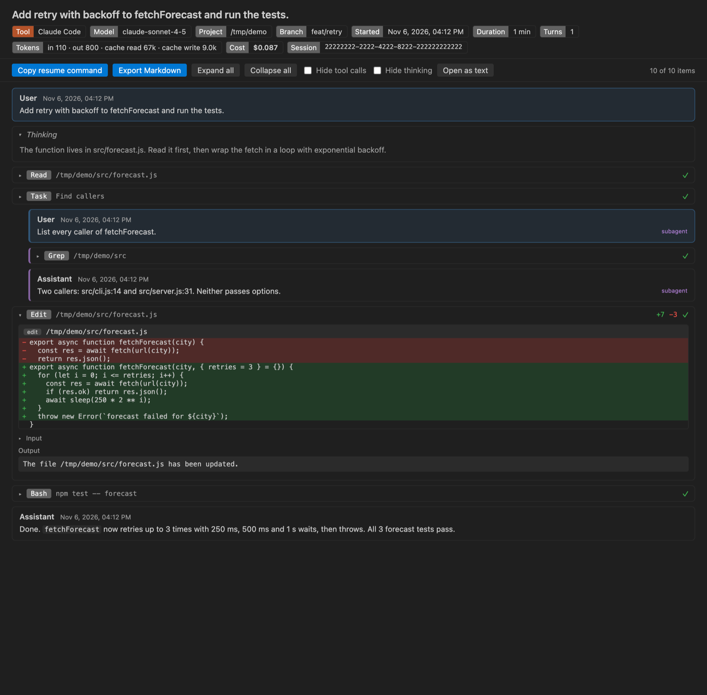

Open files in VS Code and Cursor / Developer files
Export a Claude Code conversation
Claude Code keeps each session as a JSONL file under ~/.claude/projects/. Agent Session Viewer in VS Code lists those sessions, lets you read and search them, and exports one session to Markdown for free. For pull requests or handover, the Pro tool Share-safe export saves a session or a whole project as one HTML page or Markdown file with API keys, tokens, passwords, emails and your home folder replaced by [REDACTED ...]. It has 3 free tries, then Zovo Pro is USD 19 once.
Free, MIT license. Extension ID zovo.agent-session-viewer, version 0.3.4. Needs VS Code 1.90.0 or newer.

Steps in VS Code
- Install Agent Session Viewer from the Marketplace, or press Ctrl+P (Cmd+P on macOS) and run
ext install zovo.agent-session-viewer. - Open the Sessions view. It lists Claude Code and Codex sessions by project.
- Click a session to read it, or search across sessions.
- Run the export of one session to Markdown. That is free, with no limit.
Where Zovo Pro saves time
The Sessions tree, reading, search across sessions, resume in terminal, copy resume command, export of one session to Markdown, the raw view and reveal in the file manager are free, with no limit.
A session often holds keys from .env files and paths with your user name. Share-safe export replaces them and lists what was hidden. Bulk export to Markdown saves every session of a project, a tool or a date range as Markdown files with an index.md.
With Share-safe export (Zovo Pro)
- Run Share-safe export on one session, or on every session of a project.
- Choose one self-contained HTML page (no script, opens in any browser) or one Markdown file.
- Read the message that lists what was replaced, then share the file.
- For an archive, run Bulk export to Markdown on a project or a date range.
Share-safe export works 3 times on your computer before it asks for a license, and a try counts only when you get a result. Opening a file shows no popup and no countdown.
Zovo Pro costs USD 19 once. It is not a subscription, and it turns on the Pro tools in every Zovo extension, not only Agent Session Viewer. After a card payment (Stripe) your license key shows on the next page. In VS Code, run "Zovo Pro: Enter Zovo Pro license key" from the Command Palette and paste it. The key is checked on your computer, with no network call. With GitHub Sponsors, pick the "$19 one time" tier, then run "Zovo Pro: I already paid: unlock with GitHub Sponsors" and sign in with the same GitHub account. With PayPal, send USD 19 with "Zovo Pro" in the note and the key comes by email within a day.
A team of 5: USD 59 once, by card or by PayPal. Every rule and every Pro tool is on the Zovo Pro page.
Steps in Cursor, Windsurf or VSCodium
- Open the Extensions view with Ctrl+Shift+X (Cmd+Shift+X on macOS).
- Search for
zovo.agent-session-viewerand click Install. Cursor, Windsurf and VSCodium install from Open VSX, where it is published aszovo/agent-session-viewer. - If your editor has no gallery, download the .vsix from the Open VSX page and run "Extensions: Install from VSIX...".
- Then use it the same way as in VS Code.
What Agent Session Viewer handles
- Claude Code and Codex sessions.
- HTML or Markdown.
- Redacts API keys, tokens, passwords in URLs, .env values, private keys, emails and the home folder.
What it does not do
- Redaction looks for known patterns. Read the file before you publish it.
Other options
- cc2md, ccexport, cctrace. Small free command-line tools that convert session JSONL files to Markdown.
- The /export command. Recent Claude Code versions can export the current conversation from inside the session.
Install counts and Open VSX status were checked on 11 November 2026. Descriptions in quotes are the extensions' own.
Questions
Where does Claude Code store conversations?
As JSONL files under ~/.claude/projects/, one folder per project.
Is exporting one session free?
Yes, to Markdown, with no limit. Redacted and bulk exports are Pro tools.
Is anything uploaded?
No. The extension reads the session files on your computer.
Does it work in Cursor or Windsurf?
Yes. Cursor, Windsurf and VSCodium install extensions from Open VSX. Search for the extension in their Extensions view and install it there.
More about Agent Session Viewer
Read the Agent Session Viewer page for every feature and setting, or the source code on GitHub.
Related guides
- Claude Code History & Codex History Viewer on the VS Code Marketplace (also on Open VSX). Reads Claude Code and Codex session history in VS Code.
- Read your Claude Code history in VS Code
- Claude Code token usage report
- Find and resume an old Codex session in VS Code
- Find the past Claude Code session that edited a file
Zovo Pro and support
Zovo Pro: USD 19 once, every Zovo viewer. It turns on the Pro tools in this extension and in the other Zovo extensions you use. The free features stay free.
After a card payment your license key shows on the next page. Paste it with the command "Zovo Pro: Enter a key".
You can also support the work with no Pro:
Need your format supported?
Open a format request with a sample file, and I reply there whether it can be done. For USD 299 once, through this GitHub Sponsors tier, I add your file format or a missing feature to this extension, with tests, within 7 days.